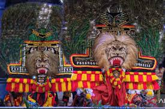
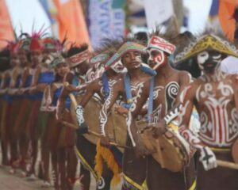
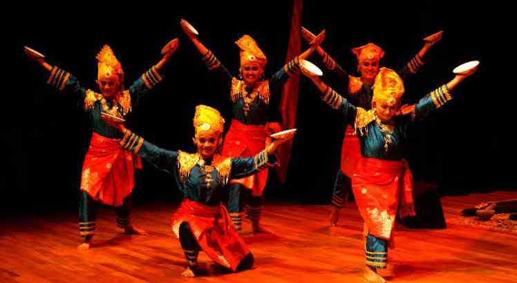

Konten Kami
5 PERTUNJUKAN BUDAYA YANG ADA DI INDONESIA
REOG PONOROGO
Reog Ponorogo adalah salah satu kesenian tradisional yang berasal dari Ponorogo, Jawa Timur, yang dikenal dengan pertunjukan yang spektakuler dan penuh makna. Tarian ini menggabungkan unsur seni tari, musik, dan teater, dengan penampilan utama yang melibatkan seorang penari yang mengenakan topeng besar berbentuk singa yang disebut "Singa Barong". Penari tersebut harus menahan topeng yang berat dengan menggunakan kekuatan rahang, sebuah pertunjukan yang menantang fisik dan keahlian.
Reog Ponorogo menceritakan kisah tentang perjuangan Raja Kelana Sewandana dari Kerajaan Ponorogo yang melawan Raja Singo Barong, simbol keberanian dan kekuatan. Selain sebagai hiburan, reog juga memiliki makna filosofis yang mendalam, mencerminkan nilai-nilai seperti keberanian, keteguhan hati, dan kebersamaan dalam menghadapi tantangan. Kesenian ini telah diakui sebagai warisan budaya Indonesia dan bahkan telah diusulkan sebagai warisan budaya dunia oleh UNESCO.
TARI SAJOJO
Tari Sajojo adalah tarian tradisional yang berasal dari Papua, Indonesia, yang terkenal dengan gerakan yang enerjik dan penuh semangat. Tarian ini menggambarkan kegembiraan dan kebersamaan dalam masyarakat Papua, serta sering dipentaskan dalam berbagai acara adat dan festival budaya. Gerakan dalam Tari Sajojo sangat dinamis, dengan penari yang biasanya mengenakan pakaian adat Papua dan bergerak mengikuti irama musik yang riang dan bersemangat.
Tari ini mengajak penonton untuk ikut bergembira dan merayakan kekayaan budaya Papua. Selain itu, Tari Sajojo juga memiliki simbolisasi persatuan dan kebersamaan, karena sering kali melibatkan banyak penari yang bergerak secara kompak, mencerminkan harmonisasi dalam kehidupan sosial masyarakat Papua. Seiring waktu, Tari Sajojo semakin populer dan sering dipertunjukkan di berbagai acara, baik di dalam negeri maupun internasional, sebagai salah satu wujud kebudayaan Indonesia yang khas dan menarik perhatian dunia.
TARI PIRING
Tari Piring adalah salah satu tarian tradisional yang berasal dari Sumatera Barat, Indonesia, yang dikenal dengan gerakan-gerakan yang dinamis dan penuh makna. Tarian ini melibatkan penari yang memegang piring di kedua tangannya, sambil menari dengan lincah mengikuti irama musik tradisional Minangkabau yang meriah. Piring-piring tersebut tidak hanya berfungsi sebagai properti, tetapi juga menjadi simbol keharmonisan dan keterampilan, karena penari harus mampu mengendalikan piring-piring tersebut agar tidak jatuh saat bergerak dengan cepat.
Tari Piring umumnya dipentaskan dalam acara-acara adat, perayaan, atau pesta rakyat, dan sering kali diiringi oleh alat musik tradisional seperti tambua, gandang, dan saluang. Selain sebagai hiburan, Tari Piring juga memiliki nilai filosofis yang dalam, menggambarkan ketahanan, kebersamaan, dan keindahan dalam kehidupan masyarakat Minangkabau. Keunikan gerakannya serta penggunaan piring sebagai properti menambah daya tarik Tari Piring sebagai salah satu warisan budaya Indonesia yang tak ternilai.
WAYANG KULIT

Wayang kulit adalah salah satu seni pertunjukan tradisional Indonesia yang telah diakui dunia sebagai warisan budaya dunia oleh UNESCO. Seni ini berasal dari Jawa dan menggunakan boneka kulit yang dipahat dengan detail halus untuk menggambarkan berbagai karakter dalam cerita, yang sering kali berasal dari epik Mahabharata atau Ramayana. Pertunjukan wayang kulit biasanya diiringi oleh gamelan, alat musik tradisional Jawa, yang memberikan suasana mistis dan magis. Dalang, atau pencerita, memegang peranan penting dalam pertunjukan ini, karena dia tidak hanya menggerakkan wayang, tetapi juga menyampaikan dialog, lagu, dan narasi dengan penuh penghayatan, sambil memberikan interpretasi filosofis dalam setiap cerita yang dibawakan.
Wayang kulit tidak hanya merupakan hiburan, tetapi juga sarana pendidikan dan penyampaian nilai-nilai moral, seperti kebenaran, keadilan, dan kehormatan. Dengan ciri khasnya yang memadukan seni rupa, teater, musik, dan filosofi, wayang kulit tetap menjadi salah satu bentuk kebudayaan yang hidup dan terus dilestarikan dalam kehidupan masyarakat Indonesia hingga kini.
OGOH-OGOH

Ogoh-ogoh adalah salah satu tradisi unik yang berasal dari Bali, Indonesia, yang biasanya dipentaskan menjelang Hari Raya Nyepi, yakni Tahun Baru Saka dalam kalender Bali. Ogoh-ogoh adalah patung besar yang terbuat dari bahan-bahan ringan seperti bambu, kertas, dan kain, yang digerakkan dengan cara diarak oleh warga desa dalam prosesi yang penuh semangat. Patung-patung ini biasanya menggambarkan makhluk halus, raksasa, atau sosok jahat yang diharapkan dapat mengusir roh-roh jahat dan menghalau segala bentuk keburukan.
Tradisi ini juga memiliki makna simbolis yang dalam, yaitu pembersihan dan penyucian diri dari segala hal negatif untuk memulai tahun baru dengan keadaan yang lebih baik. Setelah prosesi pawai, ogoh-ogoh biasanya dibakar, sebagai bentuk pengusiran roh jahat dan simbol penghancuran segala bentuk kejahatan. Ogoh-ogoh bukan hanya sebuah atraksi budaya yang memukau dengan detail seni dan kreativitasnya, tetapi juga menjadi bagian dari upaya masyarakat Bali untuk menjaga keseimbangan alam dan spiritualitas, sekaligus mempererat tali persaudaraan di antara mereka.